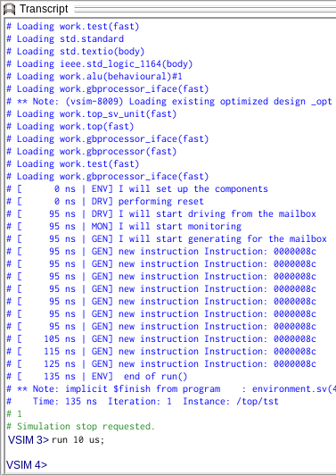

Up until this point the layered testbench was presented: there are different layers each with their own purpose. Also: transactions were shortly discussed. Next up … handing out transactions between different layers.
Mailbox is a built-in class. It works similar to an actual (single direction) mailbox. It’s worth pointing out that a mailbox operates like a FIFO (whereas an actual mailbox might operate as a LIFO (?)) and it has the following methods:
Except for the new( ) and num( ) function, all of these methods are blocking functions. This means, upon running the get() function, the software keeps on getting a message, until it succeeds.
As this might not always be desirable, there also exist these non-blocking alternatives:
Try to think of a reason why put, get and peek would block !
Mailboxes accept any type of variable or object, by default. You can (and should) make them type specific with parametrisation.
This creates a mailbox with room for 10 entries of any type.
mailbox bigRedShinyBox = new(10);
This creates a mailbox with room for 10 variables of int type.
mailbox #(int) bigBlueShinyBox = new(10);
For the sake of completeness it is mentioned that SystemVerilog has another built-in class that allows inter-process communication: Semaphores. This will not be handled in these labs, but more information on semaphores can be found here or on Google .
As with many things, hands-on experience helps understanding certain principles. Let’s see the mailbox in action. The testbench was left with a generator generating 10 transactions. Here, we’re adding a mailbox, so the generator can mail the transactions to the driver.
`include "transaction.sv"
class generator;
mailbox #(transaction) gen2drv;
function new(mailbox #(transaction) g2d);
this.gen2drv = g2d;
endfunction : new
task run;
string s;
transaction tra;
$timeformat(-9,0," ns" , 10);
s = $sformatf("[%t | GEN] I will start generating for the mailbox", $time);
$display(s);
for(int i=0; i<10; i++)
begin
tra = new();
s = $sformatf("[%t | GEN] new instruction %s", $time, tra.toString());
$display(s);
this.gen2drv.put(tra);
end
endtask : run
endclass : generator
This example shows how the generator uses a mailbox.
First, there is a class property gen2drv. Upon making an instantiation of the class generator, the constructor assigns the property to a mailbox-object. Note that this mailbox only accepts object’s of the type transaction.
Whenever the run function is executed and the generator is working its magic, the resulting transaction is put into the objects mailbox.
And … that’s it 😃
Try to think of a reason why the variable tra can be reused? Wouldn’t the next iteration of the for-loop overwrite the values of the previously generated transaction?
This example shows how the driver uses the mailbox.
Similarly to the generator, first, there is a class property gen2drv. Upon making an instantiation, the constructor assigns the property to a mailbox-object.
Note that the name is independent, but the same. The philosophy behind is: first give the name of the sender, followed by a “2”, appended with the name of the destination.
In the run_addition( ) function, the driver will wait for a transaction. Once this has arrived, it waits for a falling edge of the clock. Finally it drives the new inputs as they appear in the transaction.
And … that’s it 😃
class driver;
virtual gbprocessor_iface ifc;
mailbox #(transaction) gen2drv;
function new(virtual gbprocessor_iface ifc, mailbox #(transaction) g2d);
this.ifc = ifc;
this.gen2drv = g2d;
endfunction : new
task run_addition();
string s;
transaction tra;
$timeformat(-9,0," ns" , 10);
s = $sformatf("[%t | DRV] I will start driving from the mailbox", $time);
$display(s);
forever
begin
this.ifc.valid <= 1'b0;
this.gen2drv.get(tra);
@(posedge this.ifc.clock);
this.ifc.valid <= 1'b1;
this.ifc.instruction <= 8'h82;
end /* forever */
s = $sformatf("[%t | DRV] done", $time);
$display(s);
endtask : run_addition
endclass : driver
Where only a couple of pages back, the driver was concerning itself with the actual values, it no longer has that responsibility. It simply executes what it is instructed to, by mail.
Now we have generation and handling of mail, but … how did the mailbox come into existence ? Right … that should be done one abstraction level higher: in the environment.
`include "transaction.sv"
`include "generator.sv"
`include "driver.sv"
`include "monitor.sv"
class environment;
mailbox #(transaction) gen2drv;
virtual gbprocessor_iface ifc;
generator gen;
driver drv;
monitor mon;
function new(virtual gbprocessor_iface ifc);
this.ifc = ifc;
this.gen2drv = new(5);
this.gen = new(this.gen2drv);
this.drv = new(ifc, this.gen2drv);
this.mon = new(ifc);
endfunction : new
task run();
string s;
$timeformat(-9,0," ns" , 10);
s = $sformatf("[%t | ENV] I will set up the components", $time);
$display(s);
this.drv.do_reset();
fork
this.drv.run_addition();
this.mon.run();
this.gen.run();
join_any;
s = $sformatf("[%t | ENV] end of run()", $time);
$display(s);
endtask : run
endclass : environment
As you can already see from the number of lines, some elaboration would be welcome.
First, the environment class has a class property: gen2drv. Its type is a parametrised mailbox.
Next to the driver and monitor properties, there is also a generator property.
Upon creation of an environment, the mailbox-class is instantiated. The parameter 5 that is given determines the size (depth) of the mailbox.
Apart from creating the mailbox and attaching both ends to the correct components, the generator also has to be triggered. As the driver now also has a forever-loop, it can be started together with the monitor, in parallel.
After running for 10 clock cycles the run( ) function of the generator is triggered.
When the generator has finished, everything in the outer fork-join will be disabled and the test is done.

Quick questions: